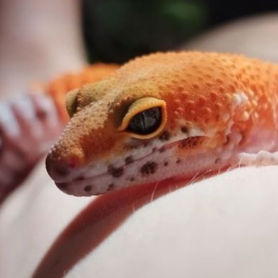
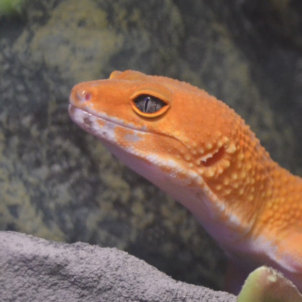

Окрас
Малыши эублефаров могут быть и в крапинку и полоску и "чистенькие ", но со временем они взрослеют и меняют свой цвет. Примерно в 1-1,5 года эублефары "перецветают" и получают свой постоянный цвет и раскраску, конечно оттенки зависят от здоровья, периода линьки, настроения и многих факторов, когда болеют расцветка более тусклая, а если им хорошо то более выражена и ярче.

Возраст ~4/5 месяцев
Такая маленькая. На мордочке было очень много белого цвета и много черных пятнышек, что менялись с возрастом, перемещались и пропадали.

Возраст ~11/12 месяцев
Белого на мордочке стало меньше, черные точки почти что пропали. Преобладает рыжий цвет, что заменил большую часть белого.